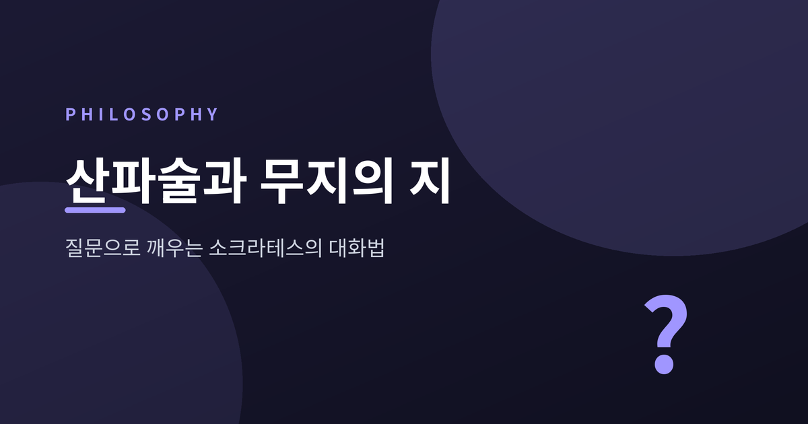
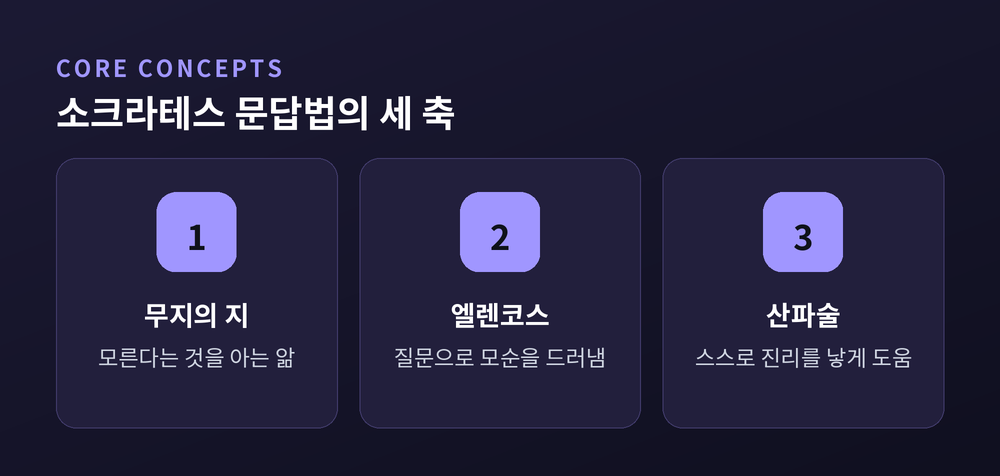
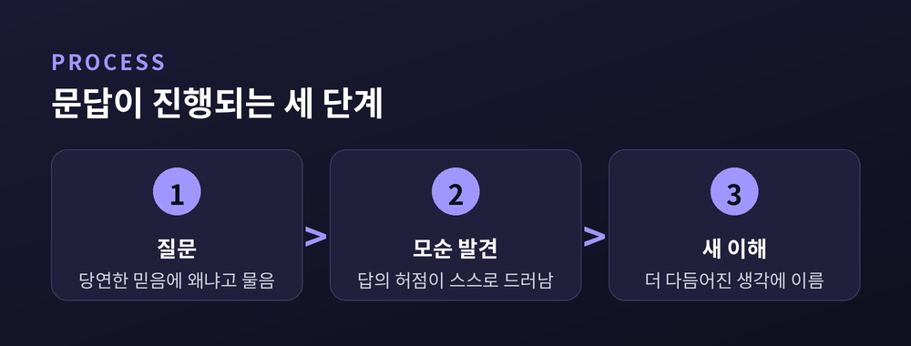
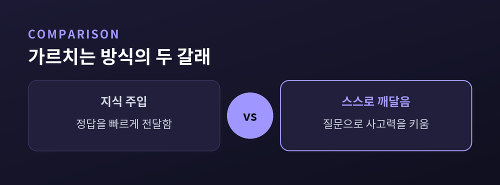

무지의 지, 물음으로 깨우다

누군가와 대화를 나누다가, 문득 내가 알고 있다고 믿었던 것이 사실은 제대로 설명할 수 없는 것이었음을 깨달은 적이 있습니까. 당연하게 여기던 생각이 몇 번의 질문 앞에서 무너지는 경험은 당혹스럽지만, 동시에 묘하게 후련합니다. 이천 년도 더 전, 아테네의 한 철학자는 바로 이 당혹감을 교육의 방법으로 삼았습니다. 그의 이름은 소크라테스입니다.
소크라테스의 친구 카이레폰은 델포이 신전에 찾아가 세상에 소크라테스보다 지혜로운 자가 있는지 물었습니다. 신탁은 없다고 답했습니다. 소크라테스는 이 말을 듣고 당혹스러워했습니다. 스스로 아는 것이 없다고 여겼기 때문입니다.
그는 신탁의 뜻을 확인하기 위해 지혜롭다고 소문난 정치인, 시인, 장인들을 찾아다니며 대화를 나눴습니다. 그리고 한 가지를 발견했습니다. 그들은 저마다 자기 분야에 대해 잘 안다고 확신했지만, 정작 질문을 몇 개만 던져도 그 앎의 밑바닥이 드러났습니다. 반면 소크라테스 자신은 적어도 자신이 모른다는 사실만은 알고 있었습니다.
여기서 무지의 지라는 개념이 나옵니다. 자신이 무엇을 모르는지 아는 것이야말로 진짜 앎의 출발점이라는 뜻입니다. 모른다는 사실을 인정하지 않는 사람은 더 배울 수 없습니다. 델포이 신전에 새겨져 있었다는 '너 자신을 알라'는 문구는, 소크라테스에게 자기 한계를 직시하라는 명령으로 다가왔습니다.

소크라테스의 대화법은 상대를 가르치는 것이 아니라 상대에게 묻는 것으로 시작합니다. "정의란 무엇인가", "용기란 무엇인가"라고 물은 뒤, 상대가 내놓은 답을 하나씩 따라가며 다시 묻습니다. 그 답이 다른 상황에도 똑같이 적용되는지, 앞서 한 말과 모순되지는 않는지를 확인합니다.
이 과정을 엘렌코스, 즉 논박이라고 부릅니다. 소크라테스는 자신의 주장을 내세우지 않습니다. 대신 상대의 대답 안에 이미 들어 있는 전제들을 끌어내어, 그것들이 서로 부딪히는 지점을 보여줄 뿐입니다. 상대는 결국 자기 말이 스스로 무너지는 것을 직접 목격합니다.
중요한 것은 이 모순이 패배가 아니라는 점입니다. 자신의 생각이 허술했음을 확인하는 순간은 오히려 더 나은 이해로 가는 문턱입니다. 플라톤의 초기 대화편들이 뚜렷한 결론 없이 끝나는 경우가 많은 이유도 여기에 있습니다. 소크라테스의 목적은 정답을 던져주는 것이 아니라, 상대가 스스로 다시 생각하게 만드는 데 있었습니다.
소크라테스는 자신의 방법을 산파술, 그리스어로 마이에우틱스라고 불렀습니다. 그의 어머니가 산파였다는 사실과도 무관하지 않은 비유입니다. 산파는 아이를 대신 낳아주지 않습니다. 산모가 스스로 낳도록 곁에서 돕고 이끌 뿐입니다.
소크라테스는 자신이 지식을 가진 사람이 아니라, 다른 사람 안에 이미 있는 앎을 꺼내도록 돕는 사람이라고 말했습니다. 질문을 통해 상대가 막연히 품고 있던 생각을 구체적인 언어로 끌어올리고, 그 생각의 허점을 스스로 발견하게 하고, 다시 더 다듬어진 생각에 이르도록 이끕니다. 지식은 주입되는 것이 아니라 대화 속에서 산출되는 것이라는 믿음이 이 비유의 바탕에 있습니다.

소크라테스의 문답법은 지금도 교육과 코칭의 근본 원리로 남아 있습니다. 답을 미리 정해두고 전달하는 수업은 지식을 빠르게 전할 수 있지만, 배우는 사람 스스로 사고하는 힘은 키우지 못합니다. 반면 좋은 질문 하나는 듣는 사람이 자기 생각의 구조를 직접 들여다보게 만듭니다.

비판적 사고 역시 이 전통에서 자랐습니다. 어떤 주장을 마주했을 때 그 근거는 무엇인지, 예외는 없는지 스스로에게 묻는 습관은 엘렌코스의 축소판입니다. 코칭 대화에서 상담자가 답을 주지 않고 질문으로 내담자의 생각을 정리하도록 돕는 방식도 산파술의 후예라 할 수 있습니다.
나는 아무것도 가르치지 않는다. 다만 생각하게 만들 뿐이다.
소크라테스가 남긴 것은 특정한 정답이 아니라, 스스로 묻고 스스로 답을 찾아가는 태도였습니다. 오늘 우리가 누군가와 나누는 대화에서도, 답을 서둘러 건네기보다 좋은 질문 하나를 먼저 건네 볼 일입니다. 자신이 무엇을 모르는지 아는 것에서, 모든 이해는 다시 시작됩니다.